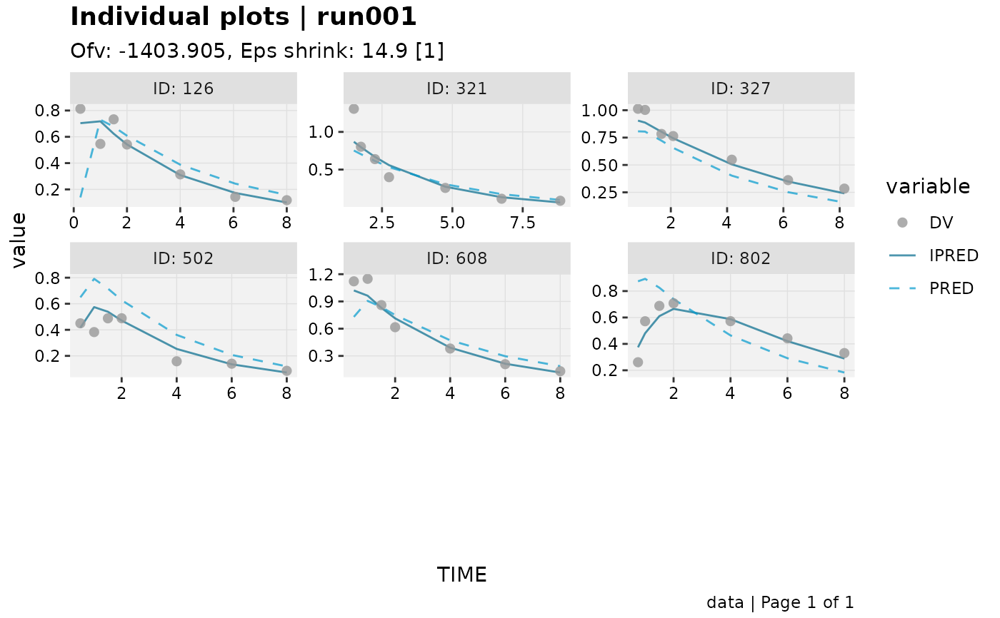
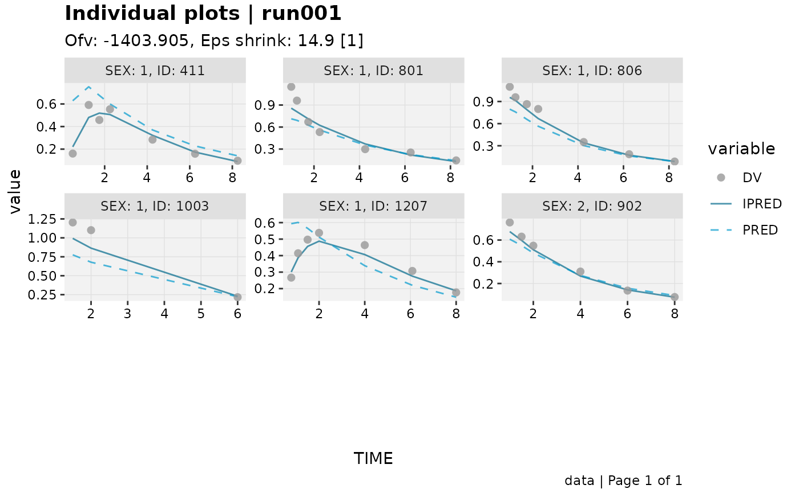

Individual plots for a (stratified) sample of individuals
Source:R/xtra_plots.R
ind_plots_sample.RdA wrapper around ind_plots that first draws a
sample of n individuals (9 by default, enough to fill a 3x3 page)
rather than plotting every individual in the dataset. If stratify is
provided, the sample is drawn proportionally from each level (or
combination of levels) of the tidyselect-ed column(s), so the sample
remains as representative as the data and n allow.
Arguments
- xpdb
<
xp_xtras> or <xpose_data> object- n
<
integer> Number of individuals to sample. Defaults to 9. If fewer individuals thannare available, all of them are used.- stratify
<
tidyselect> Optional column(s), other than the id column, to stratify the sample by.- seed
<
integer> Optional seed, set (and restored on exit) for reproducible sampling.- facets
As in
ind_plots. Defaults to the id column (andstratifycolumn(s), if given) added toxpdb$xp_theme$facets.- .problem
<
numeric> Problem number to use.- quiet
<
logical> Silence extra output.- ...
Passed on to
ind_plots
Details
When stratify is used, the stratifying column(s) are appended to the
facet formula (in addition to the id column that ind_plots
already facets by), so that the stratum each sampled individual belongs
to is visible in the plot.
Stratified sample sizes are allocated proportionally to stratum size
using the largest-remainder method, so the total sampled always equals
min(n, sum(individuals available across all strata)).
Examples
xpdb_x %>% ind_plots_sample(n = 6)
#> Using data from $prob no.1
#> Filtering data by EVID == 0
#> Tidying data by ID, SEX, MED1, MED2, DOSE ... and 23 more variables

xpdb_x %>% ind_plots_sample(n = 6, stratify = SEX)
#> Using data from $prob no.1
#> Filtering data by EVID == 0
#> Tidying data by ID, SEX, MED1, MED2, DOSE ... and 23 more variables
